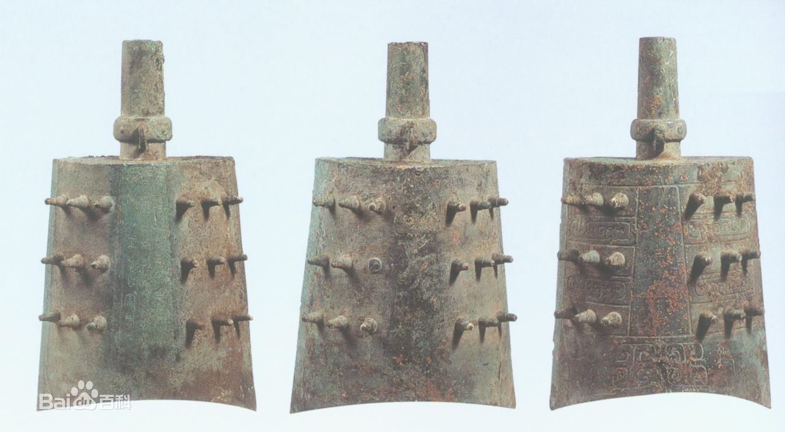
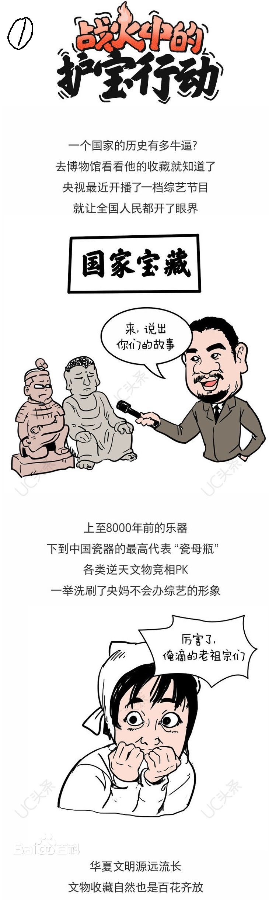
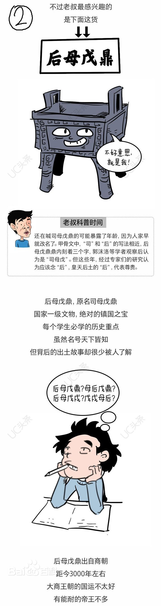
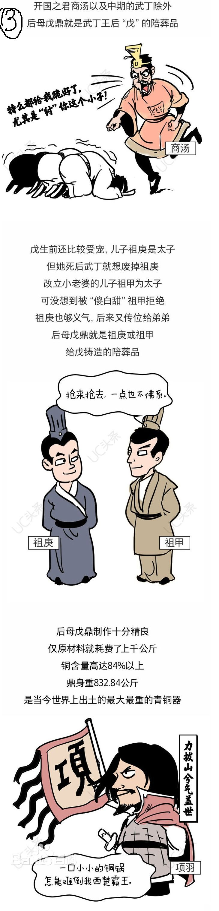
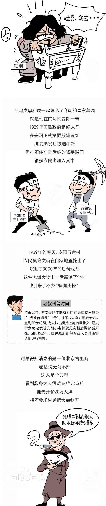
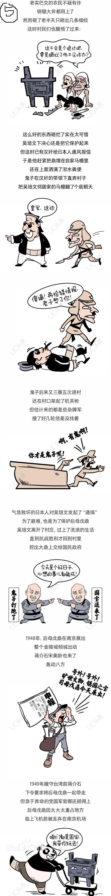
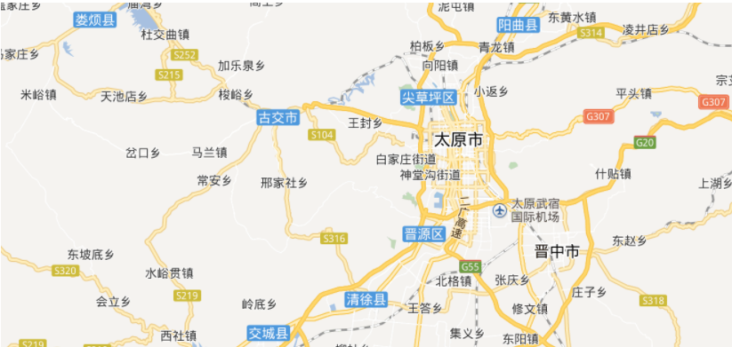

-

名称：晋侯苏钟
年代：周
出土：山西博物院藏晋侯墓地8号墓
现存：山西博物院
- 基本属性
- 全套钟共十六件，可分为两组，每组八件，其中十四件曾被盗连出境，后经上海博物馆收回入藏。第一组 为大钟，纹饰浅而细，第二组为中小型钟，纹饰深而阔。并且从造型上来讲两组也有细微的差异，研究者认为它们虽并非同时铸造，但音律却非常和谐。钟上铭文为利器刻凿而成，笔画转折处要分四五刀或是五六刀的接连刻凿，笔道才能连起来，刀痕至今非常明显。
- 文物详解
- 经过除锈处理后，刻凿在这16枚钟上的文字竟然可以连读！355个字的铭文完整地记录了周厉王三十三年晋侯稣率兵随周王巡视东土、征讨叛乱部落，并立功受赏的事。而这是我国浩瀚的古代史籍所没有记载的。 这是现如今我们第一次发现将近3000年前西周的器物上出现刻于其上的铭文。稣钟发现之后，专家们配置了不同硬度的青铜利器在青铜上刻凿文字，都以失败告终。这说明早在距今3000年的西周时期，山西人已经制造出了像钢铁一样坚硬的工具在青铜器上刻字。这是一套改写中国冶金史的宝贵资料！
铭文记载了在西周晚期某王三十三年，晋侯苏奉王命讨伐山东的夙夷，折首执讯，大获全胜，周王劳师，并两次嘉奖赏赐晋侯的史实。铭文除记载了这次重要的史书无载的战争之外，还为我们留下了两项难得的记录：一是记录了“初吉”、“既生霸”、“既望”、“既死霸”、“方死霸”五个记时词语。在一件器上有这么完整的时间记录，前所未有，是我们探讨西周历法的重要材料。二是全篇铭文用利器刻出，且笔划流畅规正，为我们研究西周晚期的冶金工艺提供了一个新的材料。





- 景点信息
-
地址：山西省太原市万柏林区滨河西路北段13号
开放：9:00-17:00，16:00停止入馆
交通：公共交通
- 景点位置
-
与必游景点的距离
晋祠： 约19.0公里
迎泽公园： 约3.0公里
汾河公园： 约32.6公里
与附近其他景点的距离
山西省博物馆： 约37米
汾河景区： 约462米

<